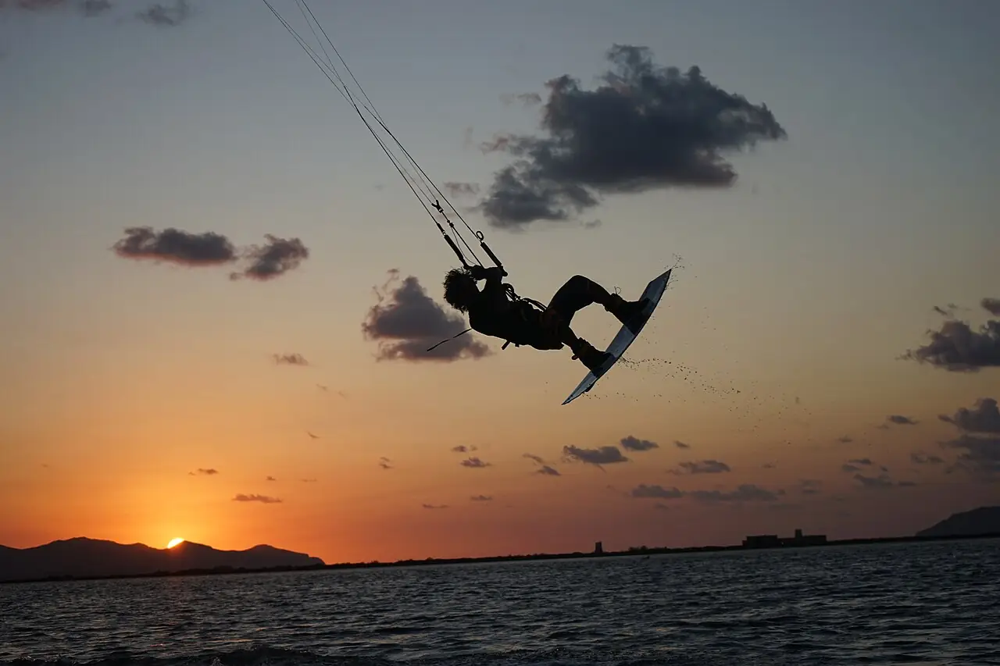

Lo Stagnone
Marsala, Sicile, Italie · kitesurf

Lagune peu profonde entre Marsala, l’Isola Grande et l’île de Mozia, bordée de salines. L’eau plate où l’on a pied sur de grandes surfaces en fait un spot de kitesurf réputé pour apprendre et pour le freestyle.
- Lieu
- Marsala, Sicile, Italie
- Niveau
- Débutant
- Activités
- kitesurf
- Type d'eau
- Mer / océan
- Coordonnées
- 37.87, 12.45 (position approximative du secteur)
Dangers à connaître
- Très faible profondeur : chute sur le fond et les herbiers, surtout en freestyle.
- Vent parfois irrégulier : ne t’éloigne pas plus que ce que tu peux remonter.
Le conseil d'Ocean Buddy
Suis les couloirs des écoles et tiens-toi à l’écart de l’île de Mozia et des zones protégées de la réserve.
Ouvrir dans Ocean Buddy Télécharger sur l'App Store
Source : Fiche Ocean Buddy · septembre 2026 · à vérifier localement.